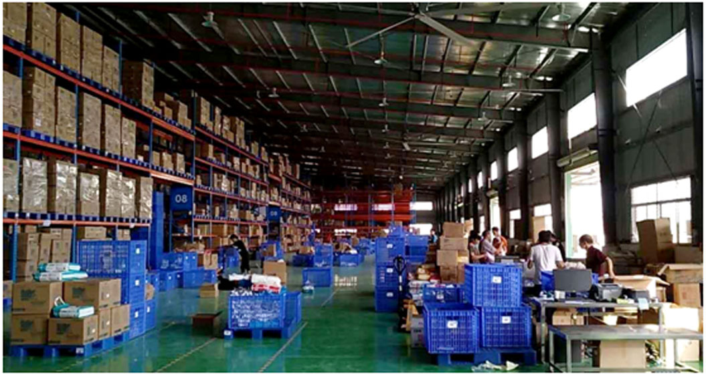

千尺高台，起于垒土，凡有成者，必务于实
发布：2017-10-11
卓尔云商供应链（武汉）有限公司是卓尔控股（02098.HK）旗下的全资子公司，成立于2017年，注册资本10000万港币。公司总部位于武汉，业务覆盖北京、上海、天津、广州、深圳等全国二十多个省市，与互联网电商京东、天猫、亚马逊，中农网、华棉所、中金网，以及中石化、中石油、北京爱亲母婴、步步高电子等行业龙头企业均建立了长期合作关系。
2017年9月，卓尔供应链与北京爱亲母婴签订了长期合作协议，借此契机，我们对卓尔供应链的仓储部总监程小军进行了独家访谈，分享卓尔供应链发展过程中的点点滴滴。
千尺高台，起于垒土：仓储是供应链的基石。
小军总向我们介绍到卓尔供应链聚焦于为供应链上下游企业提供供应链服务和供应链金融服务，其中供应链服务包括订单管理、仓储管理、物流管理等；若是把卓尔供应链看作是千尺高台，那么仓储建设则是起于垒土。这些服务依托信息管理系统有效提升企业供应链管理效率，降低人力、物力、财力投入成本，达到精益管理，降本增效的目的。供应链听起来是虚体的，但仓储管理却是实实在在的。没有实体的仓库，供应链只能是纸上谈兵。
凡有成者，必务于实：仓储管理的艰苦，卓尔人的踏实。
仓储管理无疑是非常辛苦的，从仓库的选址到仓储的建设，从仓库的装修到仓库的运营，都需要全程跟进。自从接手广州爱亲仓和北京爱亲仓，小军总便化为空中飞人，从武汉到广州，从广州到北京，没有停歇过脚步，没有终止过行程，每一天都在为仓储管理的事业付出心血。在跟踪广州仓的建设时，废寝忘食是小军总的常态，但是小军总从未把累字挂在嘴上，而是用坚毅的神情、稳健的步伐，一砖一瓦建出卓尔供应链的各大仓库，用卓尔人的踏实走出了仓储管理的每一步。

仓储管理是供应链管理中极其重要的一环，不止是小军总，越来越多的卓尔人加入到卓尔供应链的建设当中，踏实的卓尔人，势必会使卓尔蒸蒸日上。卓尔供应链奉行卓尔集团“积极”、“执着”、“稳健”、“公信”八字箴言，以现代化技术为手段，以科学创新为指导思想，坚持不懈，执着以求，打造新型供应链管理一体化解决方案，为企业产业转型升级， 以及全国大中小微企业的发展和强大贡献自己的力量！